第 14 章 傅里叶变换#
本章解决：图像除了像素直接操作的空间域（spatial domain），还有频率域（frequency domain）这把尺子：颜色趋于一致的大块缓变区域是低频，灰度急剧过渡的边缘和噪声是高频。傅里叶变换（Fourier Transform）把图像从空间域搬到频率域，把两种成分拆开摆放；在频域里用低通滤波抹掉高频（图像变模糊、噪声减弱），或用高通滤波只留高频（边缘轮廓凸显）；处理完再用逆傅里叶变换（Inverse Fourier Transform）搬回空间域。频率（frequency）、幅度（amplitude）、相位（phase）三个词是理解全章的钥匙。
运行环境约定
原书本章素材 image\lena.bmp、boat.bmp 不在素材目录中，本章统一换用素材目录里的图片顶替：picture2.png 顶替 lena（1387×1040×3，例 14.1、14.2 使用），picture8.jpg 顶替 boat（936×432×3，例 14.3~14.6 使用）。路径写作相对路径，运行时工作目录需为 数字图像处理-python 根目录，否则 imread 返回 None。例 14.6 的低通掩模边长由原书的 30 调整为 50（即中心 100×100 区域），与跟随代码一致；跟随代码还在例 14.3、14.6 里比原书多显示了滤波前后的频谱图，笔记代码保持原书结构。所有验证结论均为 OpenCV 4.13 + NumPy 2.2 + Matplotlib 3.10 环境实测。插图分两类：概念示意图（图 14.1~14.8、图 14.10）保留原书插图；程序运行结果类（图 14.9、图 14.11~14.19，以及增补的图 14.30、图 14.31）均为按笔记代码实跑生成的输出图。
14.0 本章导图#
14.1 理论基础#
图像处理一般分为空间域处理和频率域处理两大类。
空间域处理直接对图像内的像素进行处理，主要分为两种形式：灰度变换对图像内的单个像素进行处理，比如调节对比度、处理阈值；空间滤波涉及图像质量的改变，比如图像平滑。空间域处理计算简单方便，运算速度更快。
频率域处理是先将图像变换到频率域，然后在频率域内对图像进行处理，最后再通过反变换将图像从频率域变换回空间域。傅里叶变换是应用最广泛的一种频域变换：它把图像从空间域变换到频率域，逆傅里叶变换再把频率域信息变换回空间域。
从一杯饮料看时域与频域#
傅里叶变换非常抽象，很多人在工程中用了多年也没彻底理解它到底是怎么回事。先用一个生活中的例子铺路。表 14-1 是某饮料的配方，以时间形式记录了从时刻 00:00 到 00:11 的操作。
| 时刻 | 00:00 | 00:01 | 00:02 | 00:03 | 00:04 | 00:05 | 00:06 | 00:07 | 00:08 | 00:09 | 00:10 | 00:11 |
|---|---|---|---|---|---|---|---|---|---|---|---|---|
| 冰糖 | 1 | 1 | 1 | 1 | 1 | 1 | 1 | 1 | 1 | 1 | 1 | 1 |
| 红豆 | 3 | 0 | 3 | 0 | 3 | 0 | 3 | 0 | 3 | 0 | 3 | 0 |
| 绿豆 | 2 | 0 | 0 | 2 | 0 | 0 | 2 | 0 | 0 | 2 | 0 | 0 |
| 西红柿 | 4 | 0 | 0 | 0 | 4 | 0 | 0 | 0 | 4 | 0 | 0 | 0 |
| 纯净水 | 1 | 0 | 0 | 0 | 0 | 1 | 0 | 0 | 0 | 0 | 1 | 0 |
仔细分析可以发现，这份配方其实能浓缩成五句话：
- 每隔 1 分钟放 1 块冰糖；
- 每隔 2 分钟放 3 粒红豆；
- 每隔 3 分钟放 2 粒绿豆；
- 每隔 4 分钟放 4 块西红柿；
- 每隔 5 分钟放 1 杯纯净水。
这是从操作频率的角度对配方的说明。同一份信息有两种等价表示：
- 时域图（图 14-1）：横轴是时间，逐分钟画出每种配料的投放，信息完整但表格很长；
- 频域图（图 14-2）：横轴是周期（频率的倒数），纵轴是配料的份数，五根柱子就完整描述了整个操作过程。
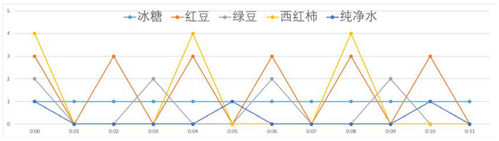
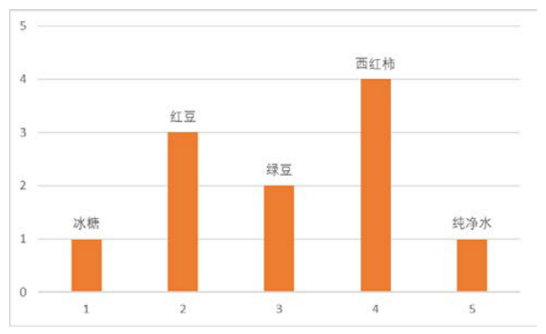
函数也一样。图 14-3 是一条频率为 5（1 秒内 5 个周期）、振幅为 1 的正弦曲线；换成频率视角，它就是图 14-4 里频率 5 处、高度 1 的一根柱子（横坐标频率、纵坐标振幅）。两张图完全等价——它们是同一个函数的不同表示形式，可以从频域表示得到对应的时域表示，也可以从时域表示得到对应的频域表示。
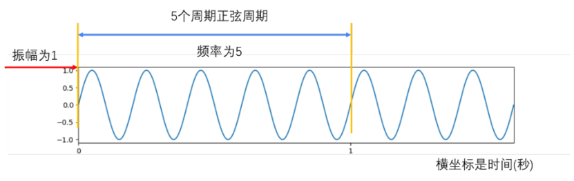
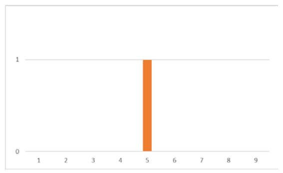
傅里叶定理与变换过程#
法国数学家傅里叶指出：任何周期函数都可以表示为不同频率的正弦函数和的形式。这个理论今天看是理所当然，但在当时难以理解，遭受了很大质疑。
看一个具体例子。图 14-5 左上角的周期函数可以表示为：
它由三个正弦函数叠加而成：函数 1 y1 = 3*np.sin(0.8*x)（右上角）、函数 2 y2 = 7*np.sin(0.5*x)（左下角）、函数 3 y3 = 2*np.sin(0.2*x)（右下角），曲线见图 14-5 的其余三幅小图。
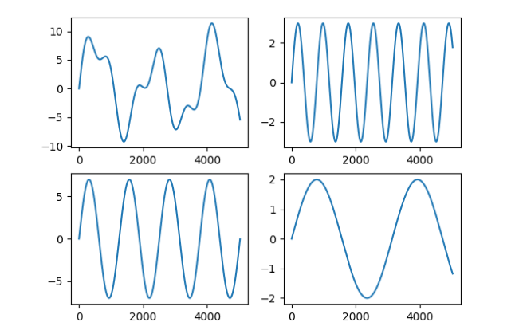
从频域角度看，三个正弦分量对应图 14-6 的三根柱子：横坐标是频率 0.2、0.5、0.8，纵坐标是各自的振幅 2、7、3。
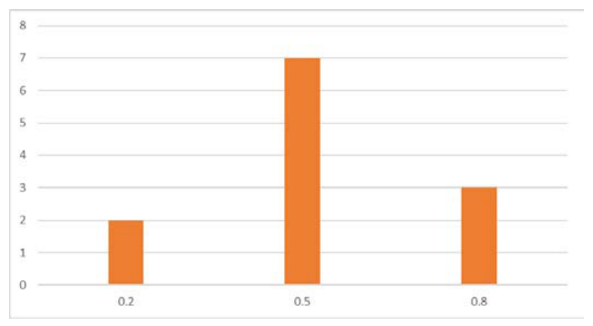
从图 14-5 左上角的时域函数图形，构造出图 14-6 所示频域图形的过程，就是傅里叶变换。图 14-1 与图 14-2 表示相同的信息，图 14-5 左上角与图 14-6 表示的也是完全相同的信息——傅里叶变换就是从频域的角度完整地表述时域信息。
原书笔误
原书此段"图14-5 左上角的时域函数图形，与图14-6 所示的频域图形表示的页是完全相同的信息"中的"表示的页是"应为"表示的是"。
相位：时间差不能丢#
除了频率和振幅，还要考虑时间差。饮料配方为了控制风味，需要严格控制加入配料的时间：表 14-1 中"00:00"时刻的操作，在更精细的控制下实际如表 14-2 所示——各配料并不是同时投放的。
| 配料 | 开始时间 |
|---|---|
| 冰糖 | 00:00:00 |
| 红豆 | 00:00:12 |
| 绿豆 | 00:00:28 |
| 西红柿 | 00:00:47 |
| 纯净水 | 00:00:55 |
加入配料的时间一变，饮料的风味就会变。所以实际处理中还要考虑时间差，这个时间差在傅里叶变换里就是相位（phase），它表述的是与时间差相关的信息。
图 14-7 左上角的函数是：
三个分量分别带有 +0、+2、+3 的初相——把横坐标看成开始时间，它们并不都是从 0 时刻开始的，彼此之间存在时间差。如果直接使用没有时间差的三个函数，叠出来的是图 14-5 左上角那条曲线，而不是图 14-7 左上角这条。所以相差也是傅里叶变换中非常重要的条件。
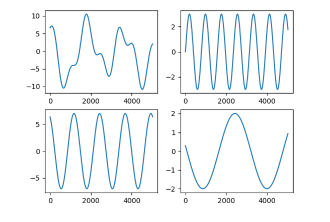
回到图像#
在图像处理中，傅里叶变换把图像分解为正弦分量和余弦分量两部分，即将图像从空间域转换到频率域（以下简称频域）。数字图像经过傅里叶变换后，得到的频域值是复数（complex number），显示结果需要使用两种形式之一：
- 实数图像（real image）加虚数图像（complex image）；
- 幅度图像（magnitude image）加相位图像（phase image）。
因为幅度图像包含了原图像中所需的大部分信息，图像处理中通常仅使用幅度图像。但如果希望先在频域内处理、再通过逆傅里叶变换得到修改后的空域图像，就必须同时保留幅度图像和相位图像。
拓展：相位里藏着什么
原书强调逆变换必须同时保留幅度与相位。实测（picture8.jpg）：把相位全部清零、只留幅度，重建图与原图的相关系数只有 0.06，只剩一团中心对称的亮斑；把幅度全部置 1、只留相位，重建图与原图的相关系数绝对值达 0.48，轮廓结构仍可辨认（相关系数为负只说明对比度翻转）。图像的"结构在哪儿"主要由相位决定，"每个频率有多强"由幅度决定，两者缺一不可。
图 14.30 把这组实测画了出来：中图仅保留幅度，只剩中心一团亮斑（显示时经 fftshift 移到画面中心并截断高光）；右图仅保留相位，轮廓结构依然可辨认。
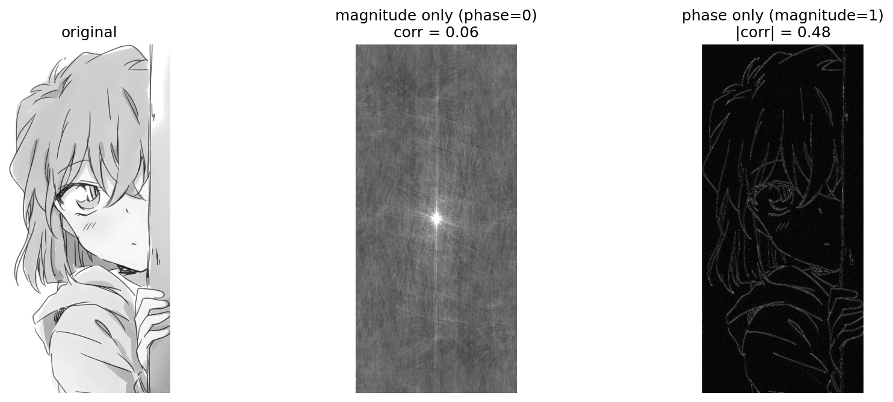
变换后，图像中同时存在低频和高频信息：
- 低频信息对应图像内变化缓慢的灰度分量。大草原图像里那片广袤的、颜色趋于一致的草原是低频；
- 高频信息对应图像内变化越来越快的灰度分量，由灰度的尖锐过渡造成。草原上那头狮子的轮廓等各种边缘以及噪声是高频。
傅里叶变换的目的，就是把图像从空域转换到频域，在频域内实现对图像内特定对象的处理，再对处理后的频域图像做逆傅里叶变换得到空域图像。它在图像处理领域可以实现图像增强、图像去噪、边缘检测、特征提取、图像压缩和加密等。
14.2 Numpy 实现傅里叶变换#
Numpy 模块提供了傅里叶变换功能，numpy.fft.fft2() 可以实现图像的傅里叶变换。本节介绍如何用它实现变换与逆变换，并在频域内过滤低频信息、保留高频信息，实现高通滤波。
14.2.1 实现傅里叶变换#
语法格式：
两点注意：
- 参数"原始图像"的类型是灰度图像；
- 返回值是一个复数数组（complex ndarray）。
经过该函数的处理就得到了图像的频谱信息。此时，图像频谱中的零频率分量位于频谱图像的左上角（原书脚注：本章中"频谱图像"与"频域图像"是同义词，作者会根据上下文混用）。为了便于观察，通常用 numpy.fft.fftshift() 将零频率成分移动到频域图像的中心位置，如图 14-8 所示。
使用该函数处理后，零频率分量会被移到频域图像的中心位置，对观察傅里叶变换后频谱中的零频率部分非常有效。
对图像做傅里叶变换得到的是复数数组，要显示为图像，需要把值调整到 \([0, 255]\) 的灰度空间内，公式为：
式中 np 是 numpy 的缩写，来源于 import numpy as np。
拓展：为什么频谱要用对数才能看清
频谱值的动态范围极大：picture8.jpg 的直流分量（所有像素之和）高达约 \(8.6\times10^7\)，而绝大多数频率分量的幅度接近 0，直接当灰度显示几乎是一张全黑图。对数把"乘法尺度"压成"加法尺度"：幅度翻 10 倍，显示值只加一段常数，大小悬殊的分量才能同时看得见。系数 20 沿用信号处理里幅度谱的分贝式表达 \(20\log_{10}|F|\)。另外注意 np.log 是自然对数，它压缩动态范围但不保证结果落在 \([0, 255]\)（见 14.3.1 的勘误说明）。
【例 14.1】用 Numpy 实现傅里叶变换，观察得到的频谱图像。
# ===== 14.2.1 例 14.1：Numpy 傅里叶变换，观察频谱 =====
import cv2
import numpy as np
import matplotlib.pyplot as plt
img = cv2.imread("picture2.png", cv2.IMREAD_GRAYSCALE) # 读入灰度图（原书 lena.bmp）
f = np.fft.fft2(img) # 傅里叶变换：返回复数数组，零频率在左上角
fshift = np.fft.fftshift(f) # 零频率分量移到频谱中心
magnitude_spectrum = 20*np.log(np.abs(fshift)) # 取模 + 对数缩放，映射到可显示范围
plt.subplot(121), plt.imshow(img, cmap='gray') # 左图：原始图像
plt.title("original"), plt.axis('off')
plt.subplot(122), plt.imshow(magnitude_spectrum, cmap='gray') # 右图：频谱图像
plt.title("magnitude spectrum"), plt.axis('off')
plt.show()
运行结果如图 14-9：左图是原始图像，右图是频谱图像。中心最亮的点就是零频率分量，从中心向外频率越来越高，越亮的点表示该频率分量的幅度越大。
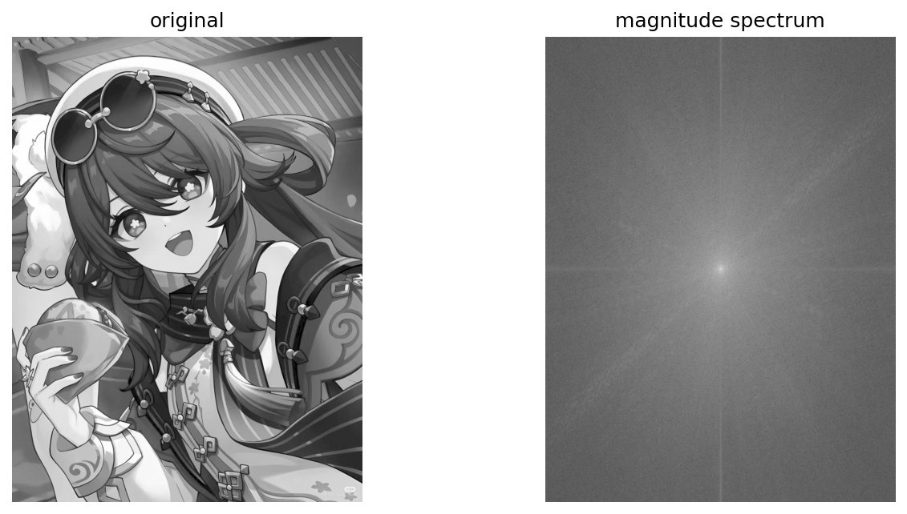
拓展：中心最亮的点是什么——直流分量
中心那个最亮的点是零频率分量，也称直流分量（DC component，Direct Current 的借用），它等于图像全部像素值之和，对应图像的整体亮度。实测 picture8.jpg：频谱中心处的幅度为 86 236 830，与像素总和 86 236 829（差 1 来自 float32 舍入）一致，\(20\ln(8.6\times10^7)\approx 365\) 正是频谱显示值里的最大者。14.2.3 的高通滤波把中心区域置零，等于连"整体亮度"一起删掉，这是还原图整体变暗、只剩轮廓的原因之一。
拓展：二维离散傅里叶变换在算什么
fft2 是二维离散傅里叶变换（DFT, Discrete Fourier Transform）的快速实现（FFT, Fast Fourier Transform）。把图像看作 \(M\times N\) 的矩阵 \(f(x,y)\)，变换与逆变换为：
\(F(u,v)\) 是频率 \((u,v)\) 处的复数系数：模长 \(\big|F(u,v)\big|\) 是该频率分量的幅度，辐角是相位。逆变换自带系数 \(\frac{1}{MN}\)——这正是 OpenCV 的 idft 需要手动加 DFT_SCALE 的原因（见 14.3.2 节）。
14.2.2 实现逆傅里叶变换#
需要注意：如果在傅里叶变换过程中用了 numpy.fft.fftshift() 移动零频率分量，那么在逆傅里叶变换前，要先用 numpy.fft.ifftshift() 把零频率分量移回原来的位置，再进行逆变换，过程如图 14-10 所示。
numpy.fft.ifftshift() 是 numpy.fft.fftshift() 的逆函数。逆傅里叶变换用 numpy.fft.ifft2() 实现，它是 numpy.fft.fft2() 的逆函数：
返回值仍旧是一个复数数组（complex ndarray）。逆傅里叶变换得到的空域信息需要调整至 \([0, 255]\) 灰度空间内，公式为：
【例 14.2】在 Numpy 内实现傅里叶变换、逆傅里叶变换，观察逆变换的结果图像。
# ===== 14.2.2 例 14.2：Numpy 傅里叶变换 + 逆变换 =====
import cv2
import numpy as np
import matplotlib.pyplot as plt
img = cv2.imread("picture2.png", cv2.IMREAD_GRAYSCALE) # 原书 lena.bmp
f = np.fft.fft2(img) # 傅里叶变换
fshift = np.fft.fftshift(f) # 零频率移到中心
ishift = np.fft.ifftshift(fshift) # 逆变换前：零频率移回左上角
iimg = np.fft.ifft2(ishift) # 逆傅里叶变换：返回空域复数数组
iimg = np.abs(iimg) # 取幅度，调整到灰度空间
plt.subplot(121), plt.imshow(img, cmap='gray')
plt.title("original"), plt.axis("off")
plt.subplot(122), plt.imshow(iimg, cmap='gray')
plt.title("inverse FFT"), plt.axis("off")
plt.show()
运行结果如图 14-11：左图是原始图像，右图是"变换 → 逆变换"一圈回来的图像，肉眼看不出差别（实测最大误差约 \(2.8\times10^{-13}\)，纯属浮点精度）。
14.2.3 高通滤波示例#
一幅图像内同时存在着高频信号和低频信号：
- 低频信号对应图像内变化缓慢的灰度分量。大草原图像中，低频信号对应颜色趋于一致的广袤草原；
- 高频信号对应图像内变化越来越快的灰度分量，由灰度的尖锐过渡造成。草原上还有一头狮子的话，高频信号就对应狮子的边缘等信息。
滤波器（filter）能够允许一定频率的分量通过或者拒绝其通过，按作用方式分为两类：
- 允许低频信号通过的叫低通滤波器（low-pass filter）。低通滤波器使高频信号衰减而对低频信号放行，会使图像变模糊；
- 允许高频信号通过的叫高通滤波器（high-pass filter）。高通滤波器使低频信号衰减而让高频信号通过，将增强图像中尖锐的细节，但是会导致图像的对比度降低。
傅里叶变换可以将图像的高频信号和低频信号分离：变换后低频信号位于频谱的中心位置（图 14-9 右图的中心）。于是可以对高频、低频分别处理——高通滤波或低通滤波——处理完再逆变换返回空域，就完成了对图像的频域处理。频域处理可以实现图像增强、图像去噪、边缘检测、特征提取、压缩和加密等操作。
高通滤波的做法：将频谱中心区域的低频分量值都替换为 0（处理为黑色），屏蔽低频信号、只保留高频信号，如图 14-12 所示。
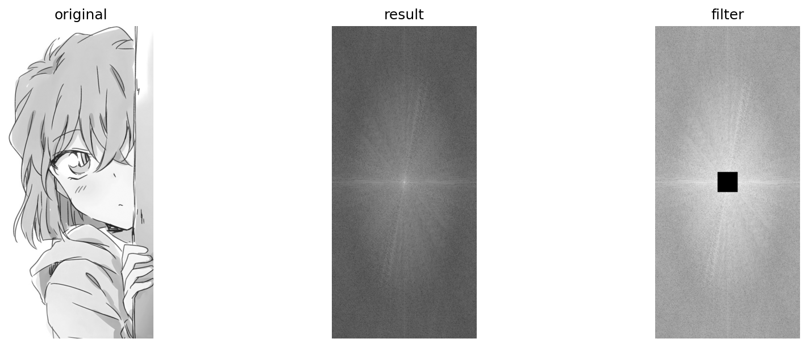
原书笔误
原书此段写作"例如，在图14-11 中，左图 original 是原始图像，中间的图像 result 是对左图 original 进行傅里叶变化后得到的结果，右图则是对 result 进行高通滤波后的结果"。图 14-11 只有 original 与 iimg 两张图，三图对照的应是图 14-12；"傅里叶变化"应为"傅里叶变换"。
要把中心区域置零，先计算中心位置的坐标，再选取以该坐标为中心、上下左右各 30 个像素的区域置零：
rows, cols = img.shape # 图像的行数、列数
crow, ccol = int(rows/2), int(cols/2) # 频谱中心坐标
fshift[crow-30:crow+30, ccol-30:ccol+30] = 0 # 中心 60×60 区域的低频分量置零
【例 14.3】在 Numpy 内对图像傅里叶变换，在频域内将低频分量的值处理为 0 实现高通滤波，最后逆变换回空域，观察变换前后的差异。
# ===== 14.2.3 例 14.3：Numpy 高通滤波（频谱中心置零） =====
import cv2
import numpy as np
import matplotlib.pyplot as plt
img = cv2.imread("picture8.jpg", cv2.IMREAD_GRAYSCALE) # 原书 boat.bmp
f = np.fft.fft2(img) # 傅里叶变换
fshift = np.fft.fftshift(f) # 零频率移到中心
rows, cols = img.shape # 行数、列数
crow, ccol = int(rows/2), int(cols/2) # 频谱中心坐标
fshift[crow-30:crow+30, ccol-30:ccol+30] = 0 # 中心 60×60 低频置零 → 高通滤波
ishift = np.fft.ifftshift(fshift) # 零频率移回原位
iimg = np.fft.ifft2(ishift) # 逆傅里叶变换
iimg = np.abs(iimg) # 取幅度
plt.subplot(121), plt.imshow(img, cmap='gray')
plt.title("original"), plt.axis('off')
plt.subplot(122), plt.imshow(iimg, cmap='gray')
plt.title("inverse"), plt.axis('off')
plt.show()
运行结果如图 14-13：经过高通滤波，图像的边缘信息得以保留，大面积平缓的区域（低频）被抹掉，还原图只剩轮廓感、整体偏暗。
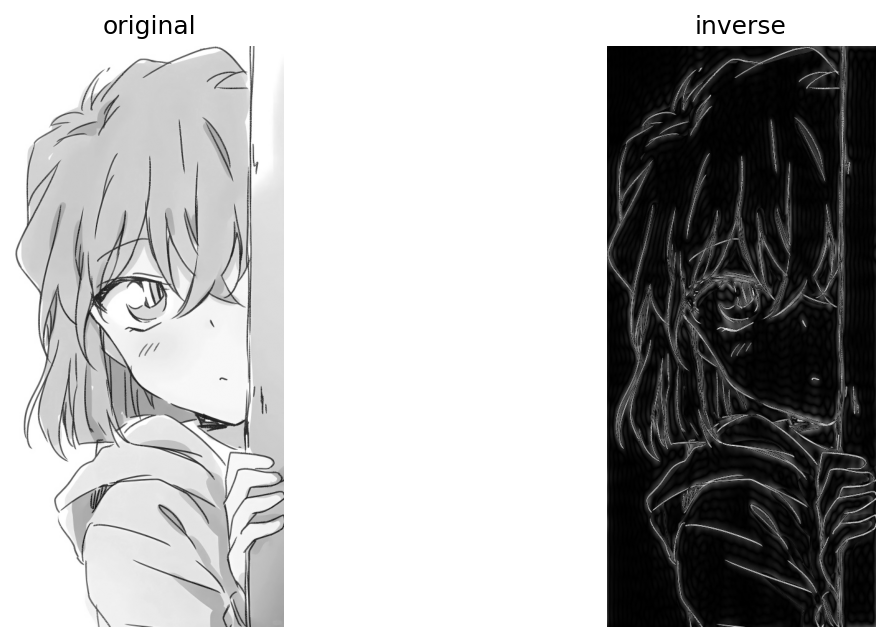
拓展：高通滤波前后实测
对 picture8.jpg 做例 14.3 的高通滤波，实测：中心 60×60 低频区（含直流分量）的频谱幅度总和占 12.2%，按平方能量算更是占 98.1%（仅直流分量一项就占约 96%）——自然图像的能量高度集中在低频；置零后还原图的均值从 213.27 跌到 17.45，整体变暗、只剩边缘轮廓，横向 Sobel 梯度与图像均值的比从 0.25 升到 2.0（约 8 倍），边缘与细节被显著突出。
14.3 OpenCV 实现傅里叶变换#
OpenCV 提供了 cv2.dft() 和 cv2.idft() 来实现傅里叶变换和逆傅里叶变换。
14.3.1 实现傅里叶变换#
语法格式：
使用时注意参数规范：
- 参数"原始图像"要先使用
np.float32()转换成 np.float32 格式； - "转换标识"的值通常为
cv2.DFT_COMPLEX_OUTPUT，用来输出一个复数阵列。
cv2.dft() 返回的结果与 Numpy 傅里叶变换的结果一致，但它返回的值是双通道的：第 1 个通道是结果的实数部分，第 2 个通道是结果的虚数部分。
拓展：dft 与 fft2 到底是不是同一个结果
是。用同一组固定随机数（8×8）实测：把 cv2.dft 的双通道（实部+虚部）拼成复数后，与 np.fft.fft2 的结果 np.allclose 通过——float32 输入最大偏差 \(6.8\times10^{-5}\)（float32 的精度级），float64 输入严格 allclose。两者的差别只在"装频谱的容器"：numpy 给一个复数数组，OpenCV 给一个两通道实数数组。注意 cv2.dft 只接受 32/64 位浮点输入，uint8 直接断言失败：type == CV_32FC1 || type == CV_32FC2 || ...。
经过 cv2.dft() 变换后得到原始图像的频谱信息，此时零频率分量并不在中心位置，为了处理方便需要将其移至中心——仍然用 numpy.fft.fftshift() 实现：
处理后频谱还只是"实部+虚部"的原始值，要显示还需进一步处理。函数 cv2.magnitude() 计算频谱信息的幅度：
两个参数的含义：
- 参数 1：浮点型 x 坐标值，也就是实部；
- 参数 2：浮点型 y 坐标值，也就是虚部，它必须和参数 1 具有相同的大小（是 size 相同，不是 value 相同）。
返回值是参数 1 和参数 2 的平方和的平方根：
式中 I 表示原始图像，dst 表示目标图像。
得到频谱幅度后，通常再做一次对数转换，把幅度值映射到灰度空间内，以灰度图像的形式展示出来：
对一幅图像完整走一遍流程，观察每一步的值。如下代码对图像做傅里叶变换、计算幅度并做规范化处理：
# ===== 14.3.1 演示：观察 cv2.dft 各步骤的值 =====
import numpy as np
import cv2
img = cv2.imread('picture8.jpg', cv2.IMREAD_GRAYSCALE) # 原书 lena.bmp
dft = cv2.dft(np.float32(img), flags=cv2.DFT_COMPLEX_OUTPUT) # 转 float32 后变换，输出双通道
print(dft) # 频谱原始值：实部+虚部
dftShift = np.fft.fftshift(dft) # 零频率分量移到中心
print(dftShift)
result = 20*np.log(cv2.magnitude(dftShift[:, :, 0], dftShift[:, :, 1])) # 幅度 → 对数缩放
print(result)
控制台输出（节选，picture8.jpg，数组形状 (936, 432, 2)）：
[[[ 8.6236832e+07 0.0000000e+00]
[ 1.5278692e+06 -2.8842247e+05]
[ 1.6993070e+06 -1.3284852e+06]
...
[ 1.6993070e+06 1.3284852e+06]
[ 1.5278692e+06 2.8842247e+05]]
...
[[ 5.8876855e+03 -1.2730505e+02]
[ 3.4094033e+03 2.2128416e+03]
...
[ 3.4094033e+03 -2.2128416e+03]
[ 5.8876924e+03 1.2730969e+02]]]
幅度值对数缩放后（result 的前几行）：
[[115.17808 166.80937 157.20457 ... 140.02374 157.20457 166.80937]
[170.33455 169.99630 182.59192 ... 178.78554 175.72964 166.86703]
[145.33728 171.02048 162.05890 ... 159.65900 156.89287 166.03783]]
各步骤的取值范围如图 14-14 所示（每个面板按自身 min–max 归一化显示）：
- 左图是
cv2.dft()得到的频谱值（此处显示实部），数值跨度达 \(10^6\) 量级，强分量一枝独秀，直接显示几乎是一片灰黑； - 中间的图是
cv2.magnitude()计算得到的频谱幅度值，范围 \(13\)~\(8.6\times10^7\)，不在标准灰度空间 \([0, 255]\) 内，同样只有中心直流一个亮点可辨； - 右图是对幅度进一步规范化（20·log）后的结果，范围回落到 \([51.5, 365.5]\)，各频率分量的明暗细节全部显现——这正是频谱必须取对数显示的原因。
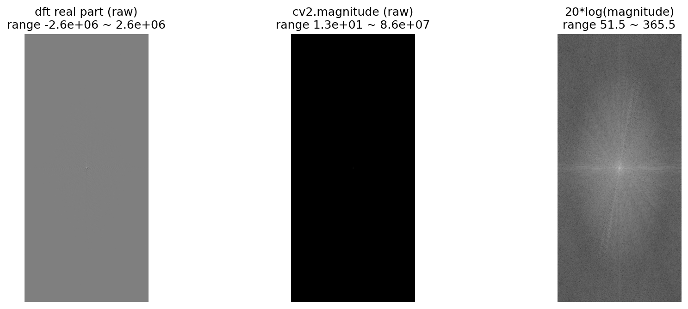
原书表述不准：20*np.log 并不会把值压进 [0, 255]
原书称规范化后"值的范围在 [0, 255] 内"。实测 picture8.jpg：result 的范围是 \([51.5, 365.5]\)，中心直流分量 \(20\ln(8.6\times10^7)\approx 365\)，明显超过 255。np.log 是自然对数，20·ln 只是把跨度几千万倍的动态范围压缩到几百的跨度，并不装箱；显示正常是因为 plt.imshow 默认按数据 min–max 归一化。要严格压进 \([0, 255]\)，可再套一层 cv2.normalize 或 cv2.convertScaleAbs。
【例 14.4】用 OpenCV 函数对图像进行傅里叶变换，并展示其频谱信息。
# ===== 14.3.1 例 14.4：OpenCV 傅里叶变换，展示频谱 =====
import numpy as np
import cv2
import matplotlib.pyplot as plt
img = cv2.imread('picture8.jpg', cv2.IMREAD_GRAYSCALE) # 原书 lena.bmp
dft = cv2.dft(np.float32(img), flags=cv2.DFT_COMPLEX_OUTPUT) # 傅里叶变换：float32 输入、双通道输出
dftShift = np.fft.fftshift(dft) # 零频率分量移到中心
result = 20*np.log(cv2.magnitude(dftShift[:, :, 0], dftShift[:, :, 1])) # 幅度 → 对数缩放
plt.subplot(121), plt.imshow(img, cmap='gray')
plt.title('Input Image'), plt.axis('off')
plt.subplot(122), plt.imshow(result, cmap='gray')
plt.title('Magnitude Spectrum'), plt.axis('off')
plt.show()
运行结果如图 14-15：左图是原始图像，右图是频谱图像——用 np.fft.fftshift() 把零频率分量移至中心后的结果，形态与例 14.1 的 Numpy 版一致。
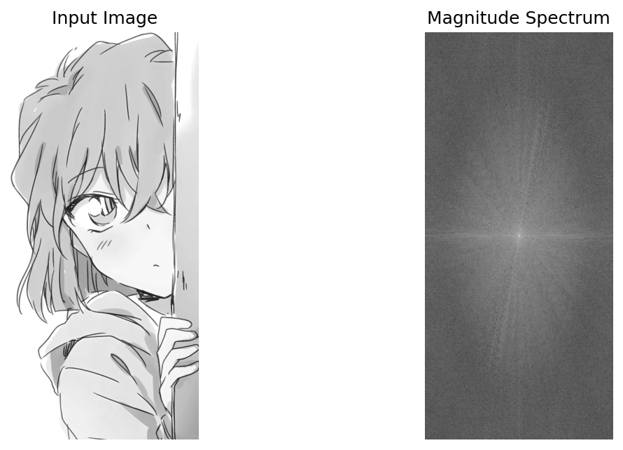
14.3.2 实现逆傅里叶变换#
OpenCV 用函数 cv2.idft() 实现逆傅里叶变换，它是 cv2.dft() 的逆函数。语法格式：
对图像做傅里叶变换后，通常会把零频率分量移至频谱中心。如果用了 numpy.fft.fftshift() 移动零频率分量，逆傅里叶变换前要用 numpy.fft.ifftshift() 把零频率分量恢复到原来位置。还要注意，逆傅里叶变换后得到的值仍旧是复数，需要用 cv2.magnitude() 计算其幅度。
【例 14.5】用 OpenCV 函数对图像进行傅里叶变换、逆傅里叶变换，并展示原始图像及逆变换后的图像。
# ===== 14.3.2 例 14.5：OpenCV 傅里叶变换 + 逆变换 =====
import numpy as np
import cv2
import matplotlib.pyplot as plt
img = cv2.imread('picture8.jpg', cv2.IMREAD_GRAYSCALE) # 原书 lena.bmp
dft = cv2.dft(np.float32(img), flags=cv2.DFT_COMPLEX_OUTPUT) # 傅里叶变换
dftShift = np.fft.fftshift(dft) # 零频率移到中心
ishift = np.fft.ifftshift(dftShift) # 零频率移回原位
iImg = cv2.idft(ishift) # 逆傅里叶变换：返回复数（双通道）
iImg = cv2.magnitude(iImg[:, :, 0], iImg[:, :, 1]) # 计算幅度
plt.subplot(121), plt.imshow(img, cmap='gray')
plt.title('original'), plt.axis('off')
plt.subplot(122), plt.imshow(iImg, cmap='gray')
plt.title('inverse'), plt.axis('off')
plt.show()
运行结果如图 14-16：左图是原始图像 img，右图是"变换 → 逆变换"一圈回来的图像，两者肉眼一致。
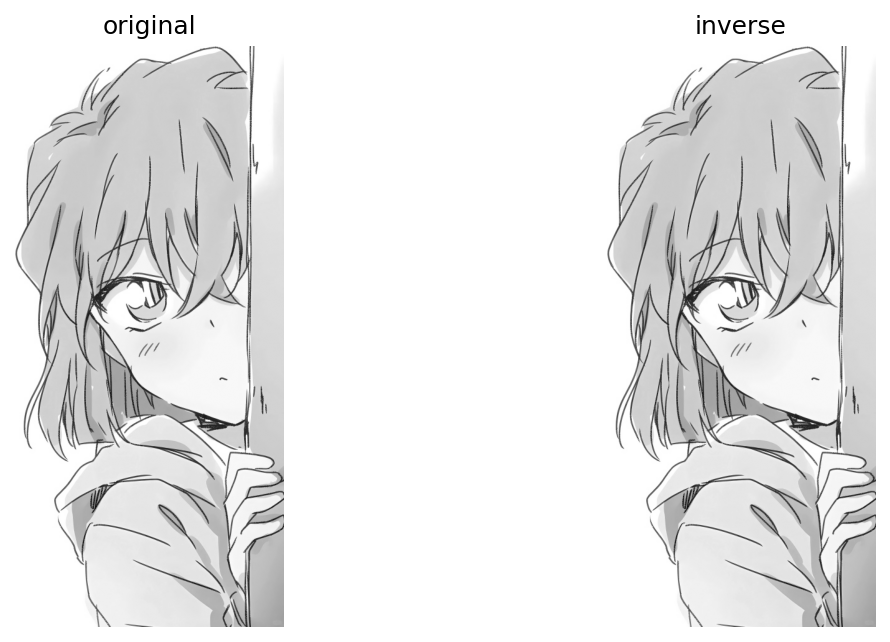
拓展：cv2.idft 默认不缩放，结果是原图的 N 倍
cv2.dft 与 cv2.idft 默认都不做归一化（对应 14.2.1 拓展里逆变换公式的 \(\frac{1}{MN}\)：OpenCV 默认不乘）。实测 8×8 数组：cv2.idft 的结果与原数组最大偏差 15 687 = 最大像素值 249 × 63，正好是 \(N-1\) 倍关系（结果被放大了 \(N=64\) 倍）。原书例 14.5 直接 plt.imshow 看起来正常，是因为 plt.imshow 自动按 min–max 归一化，把 N 倍图线性压回显示；换成 cv2.imshow（float 图按 0~1 解释）或 imwrite 就是一片全白。要拿到真值，写 cv2.idft(ishift, flags=cv2.DFT_SCALE)：实测 8×8 数组还原最大偏差 \(5.7\times10^{-14}\)，936×432 图最大偏差 \(7.6\times10^{-5}\)（float32 精度级）。
拓展：getOptimalDFTSize——让 dft 跑得更快
cv2.dft 对尺寸为 2 的幂或 2、3、5 的倍数的矩阵有专门优化。cv2.getOptimalDFTSize(n) 返回不小于 n 的最优尺寸（实测：512→512，936→960，1000→1000，1040→1080）。工程上常用 cv2.copyMakeBorder 给图像扩边到最优尺寸再变换，处理完再裁回去，频谱内容不变、只是多出填充区。本章的示例尺寸不大，直接变换即可。
14.3.3 低通滤波示例#
前面讲过，低频信号对应图像内变化缓慢的灰度分量（大草原上颜色趋于一致的广袤草原）。低通滤波器让高频信号衰减而让低频信号通过，图像低通滤波后会变模糊。
做法：将傅里叶变换结果中高频信号的值都替换为 0（黑），屏蔽高频信号、只保留低频信号，从而实现低通滤波，如图 14-17 所示。
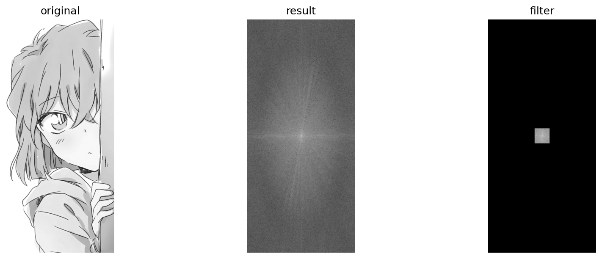
实现时可以专门构造一个如图 14-18 左图所示的掩模图像，用它乘频谱图像，就能把频谱中的高频信号过滤掉。
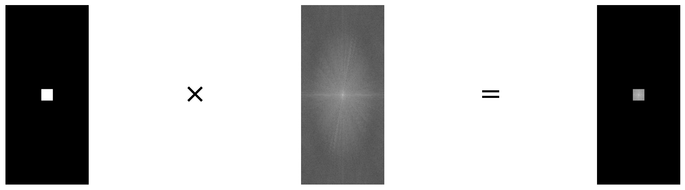
原书笔误：'与运算'应为'乘法运算'
原书两处写"用它与原图的傅里叶变换频谱图像进行与运算""然后，将其与频谱图像进行运算"。实际代码是 fShift = dftShift * mask，做的是乘法。0/1 掩模下乘法与按位与的结果恰好一致（\(1\cdot x=x\)，\(0\cdot x=0\)），但按位与对浮点频谱并无定义，准确的表述是掩模乘法。
图 14-18 左图的掩模可以采用如下方式构造：
rows, cols = img.shape # 行数、列数
crow, ccol = int(rows/2), int(cols/2) # 中心坐标
mask = np.zeros((rows, cols, 2), np.uint8) # 两个通道，与频域图像匹配
mask[crow-30:crow+30, ccol-30:ccol+30] = 1 # 中心 60×60 置 1，其余为 0
然后将其与频谱图像相乘，实现低通滤波：
【例 14.6】使用 cv2.dft() 对图像傅里叶变换得到频谱图像，在频域内将其高频分量的值处理为 0 实现低通滤波，最后逆变换回空域，观察变换前后的差异。
# ===== 14.3.3 例 14.6：OpenCV 低通滤波（掩模法） =====
import numpy as np
import cv2
import matplotlib.pyplot as plt
img = cv2.imread('picture8.jpg', cv2.IMREAD_GRAYSCALE) # 原书 lena.bmp
dft = cv2.dft(np.float32(img), flags=cv2.DFT_COMPLEX_OUTPUT) # 傅里叶变换
dftShift = np.fft.fftshift(dft) # 零频率移到中心
rows, cols = img.shape
crow, ccol = int(rows/2), int(cols/2)
mask = np.zeros((rows, cols, 2), np.uint8) # 两个通道，与频域图像匹配
mask[crow-50:crow+50, ccol-50:ccol+50] = 1 # 中心 100×100 置 1（原书为 30，跟随代码改 50）
fShift = dftShift * mask # 掩模乘频谱：中心低频保留，四周高频归零
ishift = np.fft.ifftshift(fShift) # 零频率移回原位
iImg = cv2.idft(ishift) # 逆傅里叶变换
iImg = cv2.magnitude(iImg[:, :, 0], iImg[:, :, 1]) # 取幅度
plt.subplot(121), plt.imshow(img, cmap='gray')
plt.title('original'), plt.axis('off')
plt.subplot(122), plt.imshow(iImg, cmap='gray')
plt.title('inverse'), plt.axis('off')
plt.show()
运行结果如图 14-19：左图为原始图像，右图为变换后的图像。经过低通滤波后，图像的边缘信息被削弱了，整体变模糊。
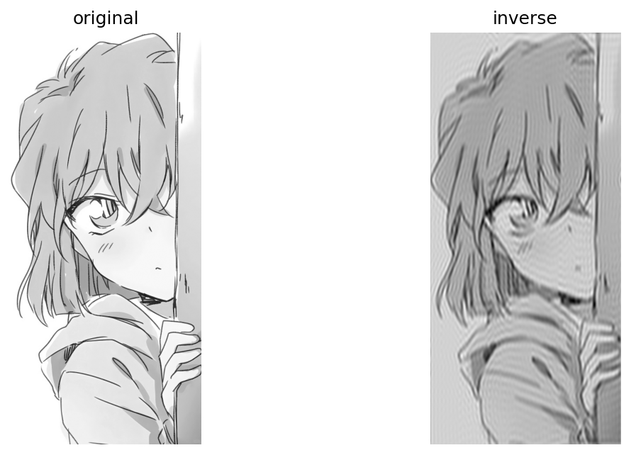
拓展：低通滤波实测与带通滤波
实测 picture8.jpg（掩模 100×100）：保留区域的频谱幅度总和只剩 20.7%（按平方能量算仍占 98.6%，直流稳稳留在中心），还原图的 Sobel 梯度从 52.9 降到 38.8（73%），而全图均值几乎不变（213.28 vs 213.27）——直流分量留在中心，整图亮度得以保留，与高通"连亮度一起删"形成对照。掩模法稍加推广就是带通滤波器（band-pass filter）：用一个大低通掩模减去一个小低通掩模，得到只允许中间频率通过的环形区域，可提取中等尺度的结构；在特定位置开"窗口"（陷波滤波）则有针对性地去除周期性噪声。
图 14.31 对 picture8.jpg 用不同半径的理想低通滤波做了对比实测：半径越小，保留的频谱成分越少，图像越模糊；r=80 时已接近原图。
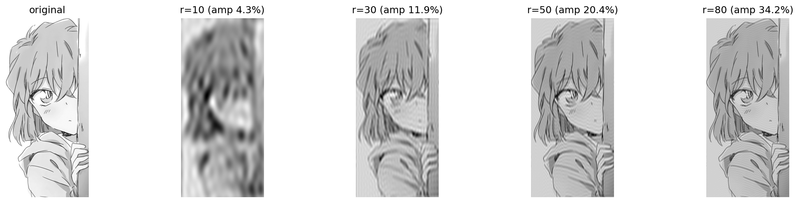
坑与陷阱#
8 个容易踩的坑
- cv2.dft 不吃 uint8：输入必须是 32/64 位浮点，先
np.float32(img)再传入，否则断言失败type == CV_32FC1 || type == CV_32FC2 || type == CV_64FC1 || type == CV_64FC2。numpy 的 fft2 没有这个要求。 - np.fft.fftshift 默认滚动全部轴：对 cv2.dft 的 (行, 列, 2) 输出，第 3 个通道轴也会被滚半圈——实部与虚部两通道整体对调。算幅度时碰巧无影响（\(|a+b\mathrm{j}| = |b+a\mathrm{j}|\)），原书的示例因此都显示正常；但只要对单个通道做运算就全错。给 OpenCV 双通道频谱做移位请写
np.fft.fftshift(dft, axes=(0, 1))。 - cv2.idft 默认不缩放：结果为原图的 N 倍（N = rows×cols，8×8 数组实测偏差 15 687）。plt.imshow 靠 min-max 归一化遮住了这个问题；cv2.imshow / imwrite 会得到全白。需要真值时加
flags=cv2.DFT_SCALE。 - fftshift 与 ifftshift 要成对：跳过 ifftshift 直接逆变换时，每个空域像素被乘上一个单位相位因子；"取幅度"流程侥幸不受影响（实测带/不带结果完全一致），但取实部/虚部继续运算立刻错乱（实测取实部最大偏差 368）。别依赖侥幸，成对使用。
- fft2 喂彩图不报错但无意义：np.fft.fft2 对三维数组沿最后两轴变换，(936, 432, 3) 输入返回 (936, 432, 3) 的复数结果——形状都对，但根本不是"这幅图的频谱"。先
cv2.cvtColor转灰度或逐通道处理。 - 掩模必须是 (rows, cols, 2)：cv2.dft 的频谱是双通道，
np.zeros((rows, cols, 2), np.uint8)与之匹配；0/1 掩模乘上去，实部虚部同时被保留或清零。写成单通道形状不匹配。 - np.log(0) 产生 -inf：高通滤波把频谱中心置 0 后再算
20*np.log(np.abs(...))会得到 -inf 并触发 RuntimeWarning。要显示滤波后的频谱，用20*np.log(np.abs(fshift) + 1)这类"加一防零"写法。 - **20*np.log 不保证落在 [0, 255]**：np.log 是自然对数，它压缩动态范围但不装箱；实测 picture8 的 result 范围 \([51.5, 365.5]\)。显示靠 plt.imshow 自动归一化；要严格 \([0, 255]\) 得再
cv2.normalize/cv2.convertScaleAbs。
速览#
- 图像处理分空间域（直接处理像素：灰度变换、空间滤波，简单快速）与频率域（变换 → 频域处理 → 逆变换）；傅里叶变换是应用最广的频域变换。
- 傅里叶定理：任何周期函数都是不同频率正弦函数的和；每个分量由频率、幅度、相位唯一确定，相位对应分量间的时间差，丢不得。
- 低频对应变化缓慢的灰度分量（大块一致区域），高频对应尖锐过渡（边缘、轮廓、噪声）。
- 变换结果是复数，显示用"幅度图像+相位图像"或"实数图像+虚数图像"；幅度包含大部分信息，但要逆变换回空域必须幅度与相位都保留。
- Numpy 流程：
np.fft.fft2(灰度图)→np.fft.fftshift（零频率移到中心）→20*np.log(np.abs())显示；逆流程np.fft.ifftshift→np.fft.ifft2→np.abs。 - OpenCV 流程：
np.float32转换后cv2.dft(img, flags=cv2.DFT_COMPLEX_OUTPUT)（双通道：实部/虚部）→np.fft.fftshift→20*np.log(cv2.magnitude(实部, 虚部))；逆流程ifftshift→cv2.idft→cv2.magnitude。 - cv2.dft 与 np.fft.fft2 数值一致（float64 严格 allclose；float32 差异在 \(10^{-4}\) 精度级），差别只在容器：复数数组 vs 双通道实数数组。
- 高通滤波：频谱中心区域置零（
fshift[crow-30:crow+30, ccol-30:ccol+30] = 0），边缘保留、整体偏暗只剩轮廓；低通滤波：0/1 掩模乘频谱保留中心，图像变模糊、亮度均值不变。 - cv2.idft 默认不缩放，结果被放大 N 倍；plt.imshow 显示正常是自动归一化的功劳，要真值加
flags=cv2.DFT_SCALE。 cv2.getOptimalDFTSize(n)给出 ⅔/5 倍数的最优尺寸（实测 936→960、1040→1080），配合cv2.copyMakeBorder扩边可加速 dft。
术语速查#
| 英文 / 函数 | 中文 | 一句话 |
|---|---|---|
| spatial domain | 空间域 | 直接对像素进行处理所在的域 |
| frequency domain | 频域 | 以频率为横轴的表示，与时域/空域信息等价 |
| Fourier transform | 傅里叶变换 | 从时域/空域到频域的变换 |
| inverse Fourier transform | 逆傅里叶变换 | 从频域搬回时域/空域的变换 |
| DFT（Discrete Fourier Transform） | 离散傅里叶变换 | 图像这类离散信号的傅里叶变换 |
| FFT（Fast Fourier Transform） | 快速傅里叶变换 | DFT 的快速算法，fft2 的底层 |
| frequency | 频率 | 分量重复的快慢，周期的倒数 |
| amplitude | 振幅 / 幅度 | 该频率分量的强弱 |
| phase | 相位 | 分量间的时间差信息 |
| low-frequency component | 低频分量 | 变化缓慢的灰度成分，位于频谱中心 |
| high-frequency component | 高频分量 | 尖锐过渡的灰度成分（边缘、噪声），位于频谱四周 |
| DC component | 直流分量 | 零频率分量，等于全部像素之和，对应整体亮度 |
| magnitude image | 幅度图像 | 各频率分量强弱的显示，包含大部分信息 |
| phase image | 相位图像 | 各频率分量时间差的显示，决定结构位置 |
| real image / complex image | 实数图像 / 虚数图像 | 频谱另一种显示组合：实部图加虚部图 |
| complex ndarray | 复数数组 | fft2 / ifft2 的返回类型 |
| low-pass filter | 低通滤波器 | 低频通过、高频衰减，图像变模糊 |
| high-pass filter | 高通滤波器 | 高频通过、低频衰减，细节凸显 |
| band-pass filter | 带通滤波器 | 只允许中间频率通过（掩模法的环形推广） |
| mask | 掩模 | 0/1 模板，乘频谱实现选频 |
| np.fft.fft2 / np.fft.ifft2 | 二维（逆）傅里叶变换 | 输入灰度图，返回复数数组 |
| np.fft.fftshift / np.fft.ifftshift | 零频率移中 / 移回 | fftshift 移到中心，ifftshift 是它的逆操作 |
| cv2.dft / cv2.idft | OpenCV（逆）傅里叶变换 | 输入须 float32；DFT_COMPLEX_OUTPUT 双通道；idft 默认不缩放，真值加 DFT_SCALE |
| cv2.magnitude | 求幅度 | 实部虚部平方和的平方根，两参数须同 size |
| cv2.getOptimalDFTSize | 最优尺寸 | 返回 ⅔/5 倍数的最小尺寸，配合扩边加速 dft |